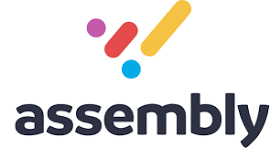
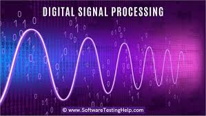
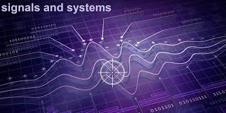
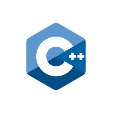

What I've Built
My Projects

Assembly Encoder Game
A fully playable Solitaire card game written entirely in x86 Assembly (MASM syntax) with no high-level language abstractions. Built as a team project in Visual Studio, it manages 13 stacks through raw push/pop operations and manual memory addressing, with every card encoded as a 32-bit hex value I designed from scratch. My contributions include the ANSI color rendering for suits in the console, the core put/take stack procedures the team built on, input validation logic, and the win condition detection across all four suit stacks. The project spans over 800 lines of hand-written assembly debugged entirely through Visual Studio's register and memory watch windows.
View Project
Linear Alegbra and Natural language Presentation
This 13-slide final presentation explores how linear algebra underpins Natural Language Processing. It covers NLP fundamentals (tokenization, embeddings, part-of-speech tagging), then dives into how vectors and matrices represent words and documents. Key topics include word embeddings, cosine similarity, Document-Term matrices, and Term-Term Co-occurrence matrices. The centerpiece is a deep dive into Hidden Markov Models (HMM):showing how transition/emission probability matrices power sequence analysis, with a worked example computing part-of-speech probabilities for the sentence "Bob ate the fruit." The conclusion ties it together: linear algebra is the mathematical backbone that makes modern NLP possible.
View Project
Verilog and Ardunio Hardware Project
Built for ECE 215L at the University of Dayton, this FPGA-based reflex timer measures a user's reaction time to 0.01-second precision using the DE10-Lite board's 50 MHz clock. I designed a 4-state finite state machine in Verilog: Default, Lobby, Go, and Finish; that handles the full game flow: a button press triggers a 3-second delay, the LED flashes on, the timer counts, and a second press stops it. The result displays in SS.CC format across four 7-segment displays. I also built an advanced version that connects the FPGA to an Arduino Nano via 11 parallel GPIO pins, transmitting the reaction time as raw binary signals. The Arduino reconstructs the time and responds with a servo motor and buzzer, a fast reaction gets a full 180° sweep and high-pitched beep, medium gets a partial spin and softer tone, and slow gets barely a movement. The entire timing system, button edge detection, display decoder, and Arduino interface were coded and wired by me.
View Project
Signals & System project: Butterworth_Filter
For ECE 303L Signals and Systems Lab at the University of Dayton, I designed and physically built 2nd-order and 4th-order Butterworth low-pass filters using the Sallen-Key topology with op-amps, resistors, and capacitors. I selected component values using MATLAB, assembled the circuits on a breadboard, and measured the magnitude frequency response using an oscilloscope and waveform generator across a range of frequencies from 200 Hz to 2000 Hz. I then used MATLAB to plot both the empirical and theoretical responses side by side, verifying how closely the physical circuit matched the mathematical model. The experiment also required deriving the Sallen-Key transfer function by hand using KCL and Laplace domain node-voltage analysis. Comparing the 2nd and 4th-order filters showed clearly how cascading stages sharpens the transition from passband to stopband a core concept in analog filter design.
View Project
Matlab and Linear Systems
For ECE 509: Analysis of Linear Systems at the University of Dayton, I completed a comprehensive project analyzing a state-space linear system through three approaches: hand derivations, MATLAB simulation, and Simulink modeling. Starting from a given state-space system, I derived the transfer function using g(s) = C(sI − A)⁻¹B + D, then solved for the zero-state response using Laplace transforms and partial fractions, and the zero-input response using eigenvalues and initial conditions. I combined both to find the total system response and plotted all three in MATLAB. Beyond the math, I verified every result in Simulink by building transfer function block models and state-space block models from scratch, confirming that the hand derivations and simulations matched exactly. I also analyzed the system's stability using eigenvalues (λ₁ = −2, λ₂ = −4), proved it was both controllable and observable.
View Project
C++ Software Project: client bags
Built entirely independently for an Advanced Data Structures course, this C++ project implements a templated Bag Abstract Data Type from scratch using object-oriented design. I designed a pure virtual abstract interface class that defines the full contract for all bag operations, then implemented it with an array-based Bag class using C++ templates so it works with any data type. The core of the project is three set operations I wrote from the ground up: union, which merges all items from both bags while preserving every duplicate; intersection, which finds shared elements and adds only the minimum frequency of each so if "Pens" appears twice in Bag1 and three times in Bag2 the result gets exactly two; and symmetric difference, which collects items that exist in one bag but not the other. A menu-driven client program lets the user choose which operation to run across two pre-filled string bags, using dynamic_cast to access the set operation methods through the abstract interface pointer.
View Project
Doctoral Programs Dashboard Tableau · DAT-210 · Data Visualization
A three-part interactive Tableau dashboard analyzing what factors influence Doctoral program offerings across U.S. universities. Using real institutional data, I built visual izations exploring enrollment size, religious affiliation, and public vs. private status; finding that institution size and geography are the strongest predictors, while religious affiliation has minimal impact. The project involved calculated fields, enrollment size grouping, color-coded degree type filters, and tooltip-driven interactivity across a scatter plot, grouped bar chart, and regional bar chart.
View ProjectNetwork Design Cisco Packet Tracer · Network Configuration
A two-phase school network design project built entirely in Cisco Packet Tracer. Starting from a 10.0.0.0/24 address space, I hand-calculated and configured subnets for 4 classrooms, an admin office, staff room, and server room; using /27, /28, and /29 subnet masks to minimize wasted IPs. I set up DHCP pools for all classroom PCs, assigned static IPs to admin and staff devices, and implemented ACL-based access control to block classroom traffic from reaching the admin subnet. In Phase 2, I expanded the network with WPA2-secured Wi-Fi (School and Guest networks), email, file, and print servers with role-specific ACL restrictions, SSH remote management, and guest network isolation, all configured using Cisco IOS commands.
View Project
Booth's Algorithm — VHDL Signed Multiplier · FPGA Design
Designed and implemented Booth's Algorithm for signed binary multiplication in VHDL for a Cyclone IV E FPGA (DE2 board). The design accepts two 8-bit signed inputs and produces a 16-bit product using three internal registers (A_reg, S_reg, P_reg) that shift and accumulate over N clock cycles based on bit-pair analysis. I wrote the full behavioral VHDL module and a testbench that reads test vectors from a CSV input file, simulated waveforms over 500ns in ModelSim with all tests passing, and compiled successfully in Quartus Prime using only 56 logic elements, under 1% of the available FPGA resources.
Watch Video